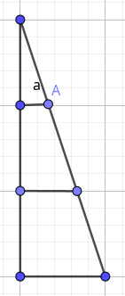
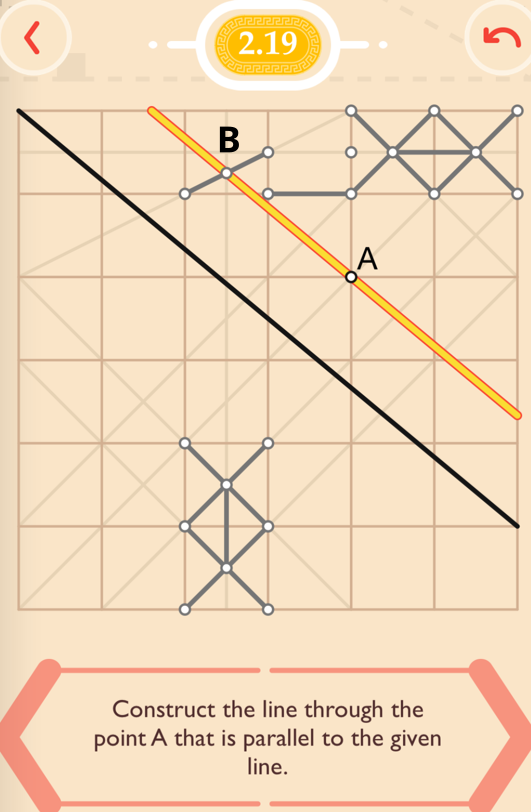

Pythagorea 毕达哥拉斯手游
爬格子的几何手游，循序渐进分为几个大类，从最基础的线段到复杂一些的重心、 多边形，切线等等。难度对于学龄人来说一般，对我就正好。本质上是有刻度的 尺子作图，没有圆规，格子摆在那就是为了让你去找正好是整数的边，或者被等 分的边。值得诟病的是，强行用纸张不够大来制造难度，逼着你找小数点坐标。
解题思路
- 观察哪些点正好在整数纵轴或者横轴上。有整的点就相当于有尺子，可以计 算并利用长度。所有靠斜率解的题都可以以此为基础。
- 如果需要找C点，就找两条都穿过C点的直线，交点为C。
- 平行线 = 斜率相等，即dy/dx相等。可以通过y轴的规律来找x轴的规律，反 之亦然。
- 勾股定理345。（其实用得很少）
常用辅助线
- 线段平分。
用以上米字脚手架，可以得到一条把所有路过的水平线都对半分的垂直线 了。这样的辅助线可以用来在格子上分出x.5, x.25,甚至x.125的刻度。
由k发散出去的几个三角形，共享垂直边。水平边之间的比例是跟角相关的，所 以平移之后还是同样的比例。从O到L的四等分，可以用平移来保持。比如垂直方 向上再平移一个单位，就可以达成把长度为3的水平线段4等分。当然，用脚手架 找0.75也可以达到类似效果。

另一种平分方式，利用相似三角形。比如找x=1/3的A点。y轴上的比例是1/3，所 以x轴上也是1/3。
- 特殊摆盘
下面这样的比例，正好所有点在整数上，并且是一个正方形。所以AC正好把角 DAB平分为两个45度角。所以题目中有1：2,1：3的摆盘就注意了，这俩刚好能凑 出一个45度角。

题目
第1、3、5章都没有什么难点，基本就是数数或者找整数点。逼急了甚至可以枚 举。
2.平行线
2.16
脚手架热身：给定的斜线（深黑）斜率是3：5。B点那个中心位置，刚好离A是1.5/2.5。
2.19

平行线的斜率要5：6。纸只有这么大，得找：1.25：1.5。下方的脚手架找横向 左移1.5，右上的脚手架找完0.5再切一次找0.25，凑出个1.25。B点就出来了。
4.medians and mid-segments
一是按照中线的定理，二是利用重心把中线分成1:2的特点
4.11
连接给定的顶点和重心M，找到一个中线和边的交点A。用脚手架平分给定的边， 找到中点B。连接相关的点就把边凑出来了。
4.12
通过点的特殊位置（数轴上的整数），把通过M的中线分别延长一半的长度，得 到中点A,B。另外两条边就出来了。
6-13
全部能用顶端说的解题思路完成
14.长度比例
主要思路是找整数和整数的等分点，依靠脚手架来平移等分点到正确的位置。
例题14.07
勾股定理得知AB的斜率正好是345三角形,找1就是五等分。利用构造相似三角形 来找到x轴上距离为3/5的点C和D,得到CD的延长线跟AB的交点，斜边长就是(3/5)/3*5=1
14.8
x轴是障眼法。根本不用看x，直接平分y轴即可。

14.9
B点为斜率为3的斜线和整数x的交点。所以y=n+1/3，AB之间的y轴距离是2+1/3, 中点离A距离为1+1/6,用脚手架做出个1/6的线即可。

15.距离
找相同斜率，并依此找等距离
15.5
AB的斜率是1：5,所以我们要用脚手架找过C点的斜率为0.5:2.5的平行线。

15.10
找直线上跟A、B的距离总和最短的点，等于把这条线当镜子找A或B在另一边对称 的点。这条线斜率1：3,刚好从B出发能制造一条斜率3：1的线，正好垂直过去。

15.14
找AB为底边的等腰三角形。AB斜率1：4比较整齐，所以以中点C出发，往左走1格， 往上走4格，到达1.5+4=5.5的位置。

16.二等分角
16.3
凑等腰三角形

16.7
特殊摆盘。A点出发的两条线斜率分别为1：2和2：1,所以互相为90度。找角平分 线就是找45度角。找A出发的斜率为1：3的线即可。